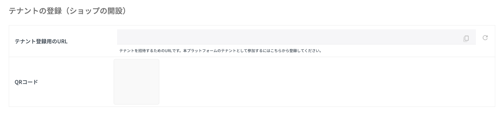
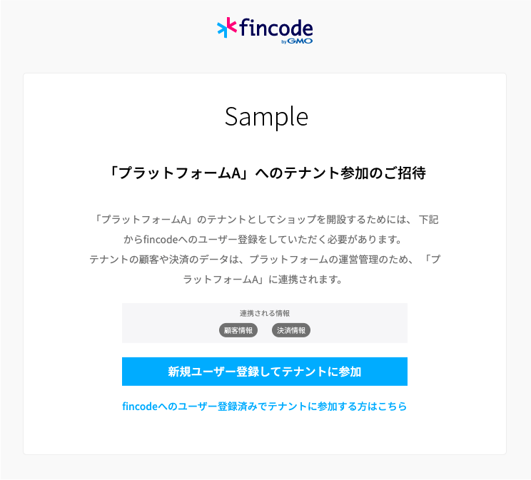
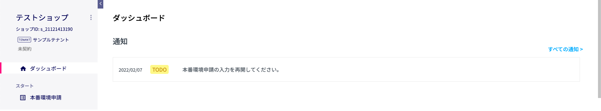

邀请租户商户
建议在邀请租户商户前完成平台设置。
查看租户商户注册链接

可以在控制面板查看租户商户注册链接，也可下载为二维码。此链接支持重新签发。重新签发后，原链接将失效。
邀请租户商户
将租户商户注册链接直接分享给租户商户的负责人，或分享从管理后台下载的二维码，即可邀请对方加入 fincode。打开注册地址后会进入租户商户邀请页面。

在租户商户邀请页面完成新用户注册后，即可登录管理后台，此时只可提交生产环境申请。

完成生产环境手续后会开放其他页面。审核完成后才可执行支付等操作。
使用 fincode API
贵公司可先向租户商户收集信息，再通过 API 登记到 fincode，即可将租户商户添加至平台。
通过 API 添加租户商户需要由 fincode 开通相应设置。请通过 联系表单与我们联系，负责人将与您沟通。